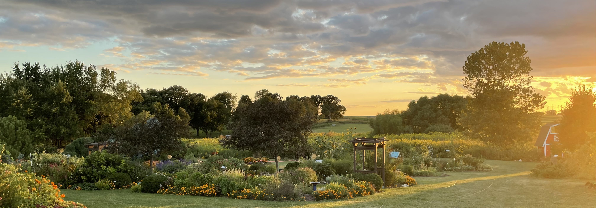
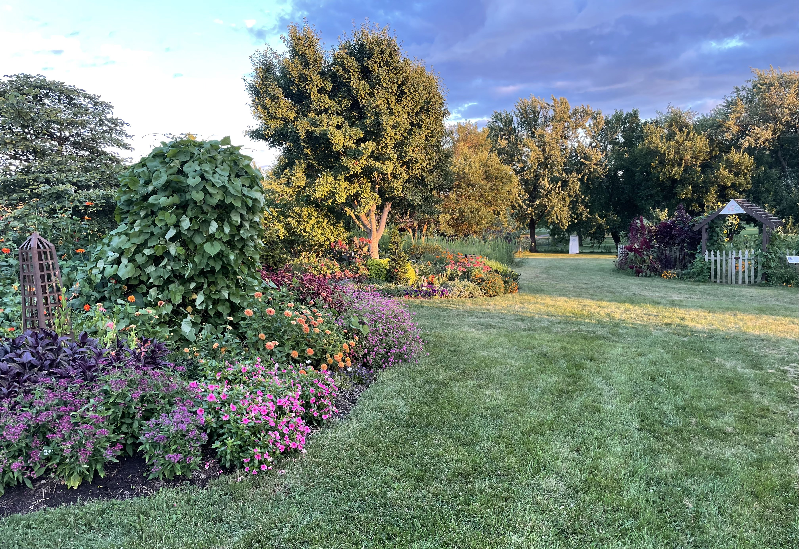
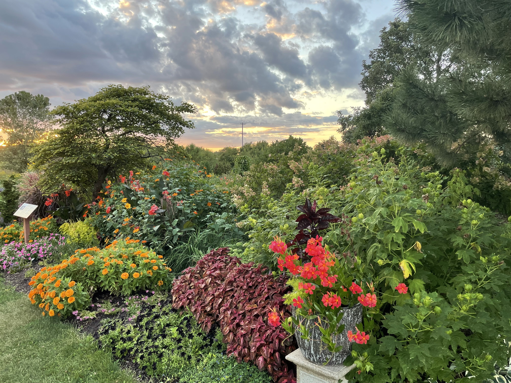
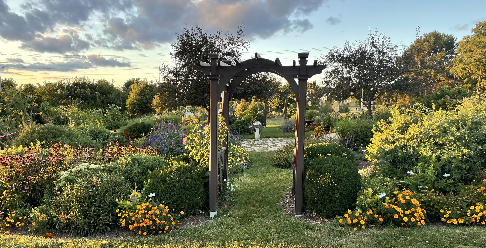

“I wanted to create a soundtrack for visitors of the Horticulture Center that would act as a conduit to enhance the experience of communing with this garden, and focus specifically on the variety and beauty of the natural world present in our community.”

[Sponsored by the 2025 Grant Walsh Student Artist in Residence Program]

Brian Kagel is a a musician from Bloomington, IL and a post-baccalaureate student at ISU focusing on Music and Audio Production. He is honored and excited to have been selected to compose a new piece of music to represent the ISU Horticulture Center and celebrate its 20th anniversary.
